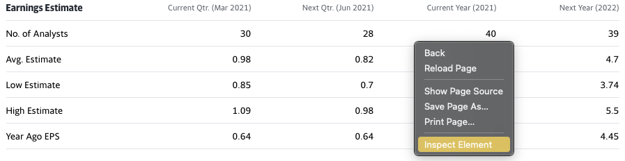
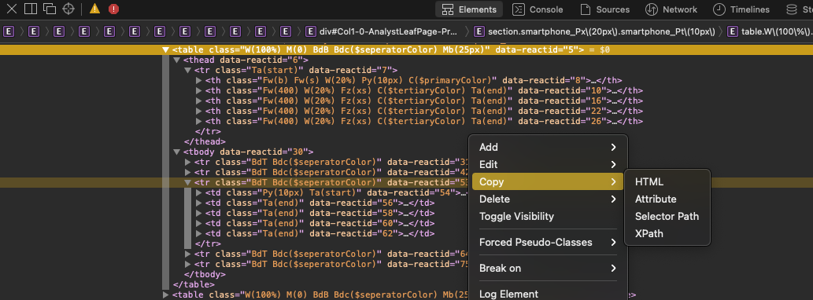

Web Scraping¶
The process of retrieving data displayed on websites automatically with your computer is called web scraping. It means instead of clicking, selecting and copying data yourself, your python script does it for you. You would only need to define how and where to look. Scraping information from the internet can be very time consuming, even when your machine does it for you. However, it may also be very rewarding because of the vast amount of data and possibilities - which come for free.
Before we can turn to the actual scraping online, we will deepen our understanding of html and how to navigate through a file.
Xpath¶
The Extensible Markup Language XML provides something like a framework to markup languages to encode structured, hierarchical data for transfer. It is thus a related to HTML, just less for displaying data than storing and transferring it. While the differences are not of interest here (learn about them yourself anytime, though), the similarities are: in the way, we can use them to navigate html documents.
The XML Path Language (Xpath) allows to select items from an xml document by addressing tag names, attributes and structural characteristics. We can use the respective commands to retrieve elements from html documents, i.e. websites.
The two basic operators are
a forward slash
/: to look into the next generationsquare brackets
[]: select a specific element
The forward slash works basically the same way as in an URL or path when navigating a directory on your computer. The square brackets on the other hand have a very similar functionality to the usage of square brackets in python.
Lets have a look at a slightly extended version of the html document from the previous chapter to see how we can use these operators for navigation.\
As usual, we first import the package (actually only one class for now) providing the desired functionality: Scrapy
from scrapy import Selector
my_html = \
"""<html><body><div id='div_1'><p class='parag-1' id ='intro'>This is a brief introduction to <b>HTML</b>.</p>
<p class='parag-1-1' id ='main'>Part 2.</p></div id='div_2' href='www.uni-passau.de'>
<p class='parag-2' id ='outro'>Part 3. <a href='www.uni-passau.de'>Homepage</a></p></body></html>
"""
#formatted version to better visualise the structure
# <html>
# <body>
# <div id='div_1'>
# <p class='parag-1' id ='intro'>
# This is a brief introduction to <b>HTML</b>.
# </p>
# <p class='parag-1-1' id ='main'>
# Part 2.
# </p>
# </div id='div_2' >
# <p class='parag-2' id ='outro'>
# Part 3.
# <a href='www.uni-passau.de'>Homepage</a>
# </p>
# </body>
# </html>
Because of the tree like structure elements are labeled in on the basis of a family tree.
The html consists of the body inside the html tags.
In the next generation, called child generation, we see one div element, itself containing two p elements, i.e. children.
Another p element appears as a sibling to the only div element.
Now let’s select single elements from this html using the xpath() method to which we pass our statement as string. To do so, we must first instantiate an Selector object with my_html. Note that chaining the extract() method to the selector object gives the desired result.
sel = Selector(text=my_html)
# navigate to p elements inside div
print('both p elements:\n', sel.xpath('/html/body/div/p').extract())
both p elements:
['<p class="parag-1" id="intro">This is a brief introduction to <b>HTML</b>.</p>', '<p class="parag-1-1" id="main">Part 2.</p>']
In the special case here, where all child elements are the p elements we are looking for, we can use the wildcard character *. It wil select any element, no matter the tag in the next generation (or in all future generations with a double forward slash).
# use wildcard character *
print('\nwildcard *:\n', sel.xpath('/html/body/div/*').extract())
wildcard *:
['<p class="parag-1" id="intro">This is a brief introduction to <b>HTML</b>.</p>', '<p class="parag-1-1" id="main">Part 2.</p>']
To select only the first p element, index the result with square brackets.
Caution
Xpath indexing starts with 1 and not 0 like python does!:::
Another way is to use scrapy’s extract_first() method.
# select first p with [1]
print('slelect only first p\n',sel.xpath('/html/body/div/p[1]').extract())
# indexing the python list starts with 0!
print('\nslelect only first p\n',sel.xpath('/html/body/div/p').extract()[0])
# with extract_first()
print('\nslelect only first p\n',sel.xpath('/html/body/div/p').extract_first())
slelect only first p
['<p class="parag-1" id="intro">This is a brief introduction to <b>HTML</b>.</p>']
slelect only first p
<p class="parag-1" id="intro">This is a brief introduction to <b>HTML</b>.</p>
slelect only first p
<p class="parag-1" id="intro">This is a brief introduction to <b>HTML</b>.</p>
We see, that a forward slash navigates one generation deeper into the structure, from html over body and div to both(!) p elements. Here, we get back a list (first print statement) of the p elements, where we can intuitively use the square brackets to select only the first one.
What we get back, however, is still a selector object. To extract the text only, we need to modify the statement further by /text().
# select text from first p element
to_print = sel.xpath('/html/body/div/p[1]/text()').extract()
print('text in first p:\n',to_print)
text in first p:
['This is a brief introduction to ', '.']
Now again, we do not see all of the text, just the string before the b tags and the dot after it as elements of a list. Even though the b tags for bold printing appear in-line, they still define a child generation for the enclosed ‘HTML’ string. Here, we could navigate further down the tree using a path to the b element for exampe.
Instead, we will make use of the double forward slash //, which selects everything ‘from future generations’. Meaning it will select all the text from all generations that follow this first p element.
# select text from first p element and all future generations by a double forward slash
to_print = sel.xpath('/html/body/div/p[1]//text()').extract()
print('text in first p and future generations with double slash:\n',to_print)
# for one string, use the join() function
print('\ncomplete string:\n', ''.join(to_print))
text in first p and future generations with double slash:
['This is a brief introduction to ', 'HTML', '.']
complete string:
This is a brief introduction to HTML.
Beside specifying a path explicitly, we can leverage built-in methods to extract our desired elements. Scrapy’s getall() returns all elements of a given tag as list
print('scrapy:\n', sel.xpath('//p').getall())
scrapy:
['<p class="parag-1" id="intro">This is a brief introduction to <b>HTML</b>.</p>', '<p class="parag-1-1" id="main">Part 2.</p>', '<p class="parag-2" id="outro">Part 3. <a href="www.uni-passau.de">Homepage</a></p>']
As mentioned before, elements can be addressed using attributes, like ID or class name. The attribute is addressed in square brackets, with @attr = 'attr_name'. If the same attribute applies to several tags, a list of all results is returned.
# search all elements in document (leading //*) by id
print('ID with wildcard:\n', sel.xpath('//*[@id="div_1"]').extract())
# same as (tag must be known)
print('\nID with div:\n', sel.xpath('//div[@id="div_1"]').extract())
ID with wildcard:
['<div id="div_1"><p class="parag-1" id="intro">This is a brief introduction to <b>HTML</b>.</p>\n<p class="parag-1-1" id="main">Part 2.</p></div>']
ID with div:
['<div id="div_1"><p class="parag-1" id="intro">This is a brief introduction to <b>HTML</b>.</p>\n<p class="parag-1-1" id="main">Part 2.</p></div>']
The contains function provides access to attributes based on (parts of) the attribute name.
# find all elements where attr contains string
print('contains string:\n', sel.xpath('//*[contains(@class, "parag-1")]').extract())
contains string:
['<p class="parag-1" id="intro">This is a brief introduction to <b>HTML</b>.</p>', '<p class="parag-1-1" id="main">Part 2.</p>']
Finally, an attribute can be returned by addressing it in the path.
print('get attribute:\n', sel.xpath('/html/body/div/p[1]/@id').extract())
get attribute:
['intro']
CSS¶
The Cascading Style Sheets language is another way to work with markup languages and thus html. Of special interest for us is that it also provides selectors. Even more convenient is that scrapy includes these selectors and the respective language. CSS uses a different syntax, which can offer much simpler and shorter statements for the same element than xpath (or sometime, the opposite)
The basic syntax changes from xpath like this:
a single generation forward:
/is replaced by>all future generations:
//is replaced by a blank space (!)not so short anymore: indexing with
[k]becomes:nth-of-type(k)
For scrapy, nothing changes really, except using .css() method. The selector object is the same as before.
Some examples:
# navigate to p elements inside div
print('xpath:\n', sel.xpath('/html/body/div/p').extract())
print('\ncss:\n', sel.css('html>body>div>p').extract())
# navigate to all p elements in document
print('\nall p elements')
print('xpath:\n', sel.xpath('//p').extract())
print('\ncss:\n', sel.css('p').extract())
xpath:
['<p class="parag-1" id="intro">This is a brief introduction to <b>HTML</b>.</p>', '<p class="parag-1-1" id="main">Part 2.</p>']
css:
['<p class="parag-1" id="intro">This is a brief introduction to <b>HTML</b>.</p>', '<p class="parag-1-1" id="main">Part 2.</p>']
all p elements
xpath:
['<p class="parag-1" id="intro">This is a brief introduction to <b>HTML</b>.</p>', '<p class="parag-1-1" id="main">Part 2.</p>', '<p class="parag-2" id="outro">Part 3. <a href="www.uni-passau.de">Homepage</a></p>']
css:
['<p class="parag-1" id="intro">This is a brief introduction to <b>HTML</b>.</p>', '<p class="parag-1-1" id="main">Part 2.</p>', '<p class="parag-2" id="outro">Part 3. <a href="www.uni-passau.de">Homepage</a></p>']
The css locator provides short notation when working with id or class:
to select elements by class: use
tag.class-name(similiar to method chaining)to select elements by id: use
tag#id-name
Examples from the toy html above:
# select by id
print('select by class:\n', sel.css('*.parag-1').extract())
# select by id
print('\nselect by id:\n', sel.css('*#intro').extract())
select by class:
['<p class="parag-1" id="intro">This is a brief introduction to <b>HTML</b>.</p>']
select by id:
['<p class="parag-1" id="intro">This is a brief introduction to <b>HTML</b>.</p>']
Attributes are in general addressed by a double colon ::attr(attribute-name), for example to extract a link from the href attribute:
# select by attribute
print('\nselect by attribute:\n', sel.css('*::attr(href)').extract())
select by attribute:
['www.uni-passau.de']
The double colon is also used to extract ::text, like we used /text() in xpath:
# extract all (blank space!) text descending from p elements inside div elements with class 'div_1'
print('\nextract text:\n', sel.css('div#div_1>p ::text').extract())
extract text:
['This is a brief introduction to ', 'HTML', '.', 'Part 2.']
Look for exampe at this cheatsheet for more commands with xpath and css.
Lastly, let’s look at BeautifulSoup again. It offers basically the same functionality to address and select any element based on its tag or attributes, but can make life easier with its prewritten methods. Keep in mind however, that BeautifulSoup is a python package, while the xpath and css syntax is standalone and will thus transfer to other software, e.g. R.
from bs4 import BeautifulSoup
soup = BeautifulSoup(my_html)
# select by id
print('by id:\n',soup.find_all('div', id='div_1'))
# select by class
print('\n by class:\n',soup.find_all('p', class_='parag-1')) # note class_ (not class)
# by s
by id:
[<div id="div_1"><p class="parag-1" id="intro">This is a brief introduction to <b>HTML</b>.</p>
<p class="parag-1-1" id="main">Part 2.</p></div>]
by class:
[<p class="parag-1" id="intro">This is a brief introduction to <b>HTML</b>.</p>]
Inspecting a webpage¶
Common internet browsers like firefox, chrome, safari, etc. include functionality to inspect webpages, meaning to look at the underlying html. To view the html, right-click on a specific element on the webpage, e.g. a headline, and select “Inspect Element” (or something similar), like shown in this screenshot taken from this page:

You will then see a small window open at the bottom of your browser, showing the html in hierarchical structure where elements can be expanded to show its child generations:

While hovering with the mouse over an element from the list, your browser should highlight the respective element on the website. So hovering over the <table> element will highlight the complete displayed table, while hovering over a <tr> element will only highlight a specific row of the table. This facilitates the setup of your code for selection. Furthermore, a right-click on the element in the list let’s one copy several characteristics like the path or the attributes directly to avoid spelling or selection errors.
In this example, we see that information is stored in a <table> and we could select it by specifying the data-reactid’ (we would have to check if there are more elements of this class, tough ids should generally be unique).
In order to collect the displayed information, we use the methods from before.
scrapy selector¶
import requests as re
from scrapy import Selector
wikiurl = 'https://finance.yahoo.com/quote/AAPL/analysis?p=AAPL'
response = re.get(wikiurl)
sel = Selector(response)
column names:
# select column names based on data-reactid
columns = sel.xpath('//thead[contains(@data-reactid, "6")]/*').css(' ::text').extract()
print(columns) # unfortunately gives unsatisfying result with parentheses
['Earnings Estimate', 'Current Qtr.', ' (', 'Jun', ' 2021)', 'Next Qtr.', ' (', 'Sep', ' 2021)', 'Current Year', ' (2021)', 'Next Year', ' (2022)']
# filter by hand...
columns = [el for el in columns[1:] if any(['Year' in el, 'Qtr.' in el])]
print(columns)
['Current Qtr.', 'Next Qtr.', 'Current Year', 'Next Year']
table data:
# select table entries based on data-reactid
table_body = sel.xpath('//tbody[contains(@data-reactid, "30")]/*').css(' ::text').extract()
print(table_body)
['No. of Analysts', '28', '27', '40', '40', 'Avg. Estimate', '0.99', '1.11', '5.19', '5.35', 'Low Estimate', '0.82', '0.83', '4.74', '4.77', 'High Estimate', '1.16', '1.27', '6.44', '6.13', 'Year Ago EPS', '0.64', '0.73', '3.28', '5.19']
labels = [el for i, el in enumerate(table_body) if i%5==0]
data = [el for i, el in enumerate(table_body) if i%5!=0]
import pandas as pd
df = pd.DataFrame.from_dict({labels[x]:[el for el in data[x:x+4]] for x in range(5)},\
orient='index', columns = columns)
print(df)
Current Qtr. Next Qtr. Current Year Next Year
No. of Analysts 28 27 40 40
Avg. Estimate 27 40 40 0.99
Low Estimate 40 40 0.99 1.11
High Estimate 40 0.99 1.11 5.19
Year Ago EPS 0.99 1.11 5.19 5.35
pandas¶
The read_html()function returns a list of all available tables on the specified webpage.
pd_df = pd.read_html('https://finance.yahoo.com/quote/AAPL/analysis?p=AAPL')
print(f'type: {type(pd_df)}, length: {len(pd_df)}')
type: <class 'list'>, length: 6
pd_df[0]
| Earnings Estimate | Current Qtr. (Jun 2021) | Next Qtr. (Sep 2021) | Current Year (2021) | Next Year (2022) | |
|---|---|---|---|---|---|
| 0 | No. of Analysts | 28.00 | 27.00 | 40.00 | 40.00 |
| 1 | Avg. Estimate | 0.99 | 1.11 | 5.19 | 5.35 |
| 2 | Low Estimate | 0.82 | 0.83 | 4.74 | 4.77 |
| 3 | High Estimate | 1.16 | 1.27 | 6.44 | 6.13 |
| 4 | Year Ago EPS | 0.64 | 0.73 | 3.28 | 5.19 |
Webcrawler¶
A webcrawler or spider will automatically ‘crawl’ the web in order to collect data. Once set up, it can be run every day in the morning, every couple of hours, etc. Such rugular scraping is used to build a database, e..g with newspaper articles. Commonly, for this kind of data collection, the webcrawler is deployed using cloud computing which is not part of this course.
We will, however, take a look at a very basic spider not diving in too deep. In scrapy, spiders are defined as classes including the respective methods for scraping:
providing the seed pages to start
parsing and storing the data
It is important to note that scrapy spiders make use of callbacks. A callback is a function, which is run as soon as some criterion is met, usually when some other task is finished. In a scrapy spider, the parsing function is used as callback for the request method: The request must be complete so that the parsing may commence.
callback¶
The following is a basic example for a callback. The function will print the string and the callback will print the length of the string.
def enter_string(string, callback):
print(string)
callback(string)
def print_len(x):
print(len(x))
enter_string('onomatopoeia', callback=print_len)
onomatopoeia
12
Let’s take a look at the basic structure of a spider, found in the scrapy docs.
import scrapy
class mySpider(scrapy.Spider):
name = "my_first"
def start_requests(self):
urls = [
'http://www.example.com'
]
for url in urls:
yield scrapy.Request(url=url, callback=self.parse)
def parse(self, response):
print(response.css('p::text').extract())
The start_requests method provides the start or url or seed. For every url in this starting list, we send a Request using the respective function. We provide to this function the callback to be the parse method defined subsequently. It is important to use yield, i.e. to create a generator, as this is required by scrapy.
In parse(), we use the already familiar css method to extract all text found in p elements from the website.
In order to let the spider crawl, we need to import CrawlerProcess instantiate an according object, link the spider to it and start the process.
from scrapy.crawler import CrawlerProcess
proc = CrawlerProcess()
proc.crawl(mySpider)
proc.start()
2021-06-08 15:45:59 [scrapy.utils.log] INFO: Scrapy 2.5.0 started (bot: scrapybot)
2021-06-08 15:45:59 [scrapy.utils.log] INFO: Versions: lxml 4.6.3.0, libxml2 2.9.10, cssselect 1.1.0, parsel 1.6.0, w3lib 1.22.0, Twisted 21.2.0, Python 3.9.5 (default, May 4 2021, 03:36:27) - [Clang 12.0.0 (clang-1200.0.32.29)], pyOpenSSL 20.0.1 (OpenSSL 1.1.1k 25 Mar 2021), cryptography 3.4.7, Platform macOS-11.4-x86_64-i386-64bit
2021-06-08 15:45:59 [scrapy.utils.log] DEBUG: Using reactor: twisted.internet.selectreactor.SelectReactor
2021-06-08 15:45:59 [scrapy.crawler] INFO: Overridden settings:
{}
2021-06-08 15:45:59 [scrapy.extensions.telnet] INFO: Telnet Password: 3b763dddf9a3eca3
2021-06-08 15:45:59 [scrapy.middleware] INFO: Enabled extensions:
['scrapy.extensions.corestats.CoreStats',
'scrapy.extensions.telnet.TelnetConsole',
'scrapy.extensions.memusage.MemoryUsage',
'scrapy.extensions.logstats.LogStats']
2021-06-08 15:45:59 [scrapy.middleware] INFO: Enabled downloader middlewares:
['scrapy.downloadermiddlewares.httpauth.HttpAuthMiddleware',
'scrapy.downloadermiddlewares.downloadtimeout.DownloadTimeoutMiddleware',
'scrapy.downloadermiddlewares.defaultheaders.DefaultHeadersMiddleware',
'scrapy.downloadermiddlewares.useragent.UserAgentMiddleware',
'scrapy.downloadermiddlewares.retry.RetryMiddleware',
'scrapy.downloadermiddlewares.redirect.MetaRefreshMiddleware',
'scrapy.downloadermiddlewares.httpcompression.HttpCompressionMiddleware',
'scrapy.downloadermiddlewares.redirect.RedirectMiddleware',
'scrapy.downloadermiddlewares.cookies.CookiesMiddleware',
'scrapy.downloadermiddlewares.httpproxy.HttpProxyMiddleware',
'scrapy.downloadermiddlewares.stats.DownloaderStats']
2021-06-08 15:45:59 [scrapy.middleware] INFO: Enabled spider middlewares:
['scrapy.spidermiddlewares.httperror.HttpErrorMiddleware',
'scrapy.spidermiddlewares.offsite.OffsiteMiddleware',
'scrapy.spidermiddlewares.referer.RefererMiddleware',
'scrapy.spidermiddlewares.urllength.UrlLengthMiddleware',
'scrapy.spidermiddlewares.depth.DepthMiddleware']
2021-06-08 15:45:59 [scrapy.middleware] INFO: Enabled item pipelines:
[]
2021-06-08 15:45:59 [scrapy.core.engine] INFO: Spider opened
2021-06-08 15:45:59 [scrapy.extensions.logstats] INFO: Crawled 0 pages (at 0 pages/min), scraped 0 items (at 0 items/min)
2021-06-08 15:45:59 [scrapy.extensions.telnet] INFO: Telnet console listening on 127.0.0.1:6023
2021-06-08 15:45:59 [scrapy.core.engine] DEBUG: Crawled (200) <GET http://www.example.com> (referer: None)
2021-06-08 15:45:59 [scrapy.core.engine] INFO: Closing spider (finished)
2021-06-08 15:45:59 [scrapy.statscollectors] INFO: Dumping Scrapy stats:
{'downloader/request_bytes': 215,
'downloader/request_count': 1,
'downloader/request_method_count/GET': 1,
'downloader/response_bytes': 1022,
'downloader/response_count': 1,
'downloader/response_status_count/200': 1,
'elapsed_time_seconds': 0.324208,
'finish_reason': 'finished',
'finish_time': datetime.datetime(2021, 6, 8, 13, 45, 59, 788445),
'httpcompression/response_bytes': 1256,
'httpcompression/response_count': 1,
'log_count/DEBUG': 1,
'log_count/INFO': 10,
'memusage/max': 78602240,
'memusage/startup': 78598144,
'response_received_count': 1,
'scheduler/dequeued': 1,
'scheduler/dequeued/memory': 1,
'scheduler/enqueued': 1,
'scheduler/enqueued/memory': 1,
'start_time': datetime.datetime(2021, 6, 8, 13, 45, 59, 464237)}
2021-06-08 15:45:59 [scrapy.core.engine] INFO: Spider closed (finished)
['This domain is for use in illustrative examples in documents. You may use this\n domain in literature without prior coordination or asking for permission.']
After some output (red window), we see the text from the website.
In order to really crawl the web, we would need to extend the spider:
find all links on the starting page
parse all text on the starting page
find all links on the pages found the step before
parse all text from the pages found the step before
then repeat steps 3 and 4.
We will now expand the spider from above to print the text from the starting page, then follow the provided links to the next page and print that text.
from scrapy.crawler import CrawlerProcess
import scrapy
class followSpider(scrapy.Spider):
name = "my_second"
def start_requests(self):
urls = [
'http://www.example.com'
]
for url in urls:
yield scrapy.Request(url=url, callback=self.parse_links)
def parse_links(self, response):
links = response.css('a::attr(href)').extract()
print(''.join(response.xpath('//p/text()').extract()))
for link in links:
yield response.follow(url=link, callback=self.parse)
def parse(self, response):
print(response.url)
print(''.join(response.xpath('//p/text()').extract()))
proc = CrawlerProcess()
proc.crawl(followSpider)
proc.start()
2021-06-08 15:46:12 [scrapy.utils.log] INFO: Scrapy 2.5.0 started (bot: scrapybot)
2021-06-08 15:46:12 [scrapy.utils.log] INFO: Versions: lxml 4.6.3.0, libxml2 2.9.10, cssselect 1.1.0, parsel 1.6.0, w3lib 1.22.0, Twisted 21.2.0, Python 3.9.5 (default, May 4 2021, 03:36:27) - [Clang 12.0.0 (clang-1200.0.32.29)], pyOpenSSL 20.0.1 (OpenSSL 1.1.1k 25 Mar 2021), cryptography 3.4.7, Platform macOS-11.4-x86_64-i386-64bit
2021-06-08 15:46:12 [scrapy.utils.log] DEBUG: Using reactor: twisted.internet.selectreactor.SelectReactor
2021-06-08 15:46:12 [scrapy.crawler] INFO: Overridden settings:
{}
2021-06-08 15:46:12 [scrapy.extensions.telnet] INFO: Telnet Password: 9a2eff7734e36d23
2021-06-08 15:46:12 [scrapy.middleware] INFO: Enabled extensions:
['scrapy.extensions.corestats.CoreStats',
'scrapy.extensions.telnet.TelnetConsole',
'scrapy.extensions.memusage.MemoryUsage',
'scrapy.extensions.logstats.LogStats']
2021-06-08 15:46:12 [scrapy.middleware] INFO: Enabled downloader middlewares:
['scrapy.downloadermiddlewares.httpauth.HttpAuthMiddleware',
'scrapy.downloadermiddlewares.downloadtimeout.DownloadTimeoutMiddleware',
'scrapy.downloadermiddlewares.defaultheaders.DefaultHeadersMiddleware',
'scrapy.downloadermiddlewares.useragent.UserAgentMiddleware',
'scrapy.downloadermiddlewares.retry.RetryMiddleware',
'scrapy.downloadermiddlewares.redirect.MetaRefreshMiddleware',
'scrapy.downloadermiddlewares.httpcompression.HttpCompressionMiddleware',
'scrapy.downloadermiddlewares.redirect.RedirectMiddleware',
'scrapy.downloadermiddlewares.cookies.CookiesMiddleware',
'scrapy.downloadermiddlewares.httpproxy.HttpProxyMiddleware',
'scrapy.downloadermiddlewares.stats.DownloaderStats']
2021-06-08 15:46:12 [scrapy.middleware] INFO: Enabled spider middlewares:
['scrapy.spidermiddlewares.httperror.HttpErrorMiddleware',
'scrapy.spidermiddlewares.offsite.OffsiteMiddleware',
'scrapy.spidermiddlewares.referer.RefererMiddleware',
'scrapy.spidermiddlewares.urllength.UrlLengthMiddleware',
'scrapy.spidermiddlewares.depth.DepthMiddleware']
2021-06-08 15:46:12 [scrapy.middleware] INFO: Enabled item pipelines:
[]
2021-06-08 15:46:12 [scrapy.core.engine] INFO: Spider opened
2021-06-08 15:46:12 [scrapy.extensions.logstats] INFO: Crawled 0 pages (at 0 pages/min), scraped 0 items (at 0 items/min)
2021-06-08 15:46:12 [scrapy.extensions.telnet] INFO: Telnet console listening on 127.0.0.1:6023
2021-06-08 15:46:12 [scrapy.core.engine] DEBUG: Crawled (200) <GET http://www.example.com> (referer: None)
This domain is for use in illustrative examples in documents. You may use this
domain in literature without prior coordination or asking for permission.
2021-06-08 15:46:13 [scrapy.downloadermiddlewares.redirect] DEBUG: Redirecting (301) to <GET http://www.iana.org/domains/reserved> from <GET https://www.iana.org/domains/example>
2021-06-08 15:46:13 [scrapy.core.engine] DEBUG: Crawled (200) <GET http://www.iana.org/domains/reserved> (referer: http://www.example.com)
2021-06-08 15:46:13 [scrapy.core.engine] INFO: Closing spider (finished)
2021-06-08 15:46:13 [scrapy.statscollectors] INFO: Dumping Scrapy stats:
{'downloader/request_bytes': 736,
'downloader/request_count': 3,
'downloader/request_method_count/GET': 3,
'downloader/response_bytes': 6745,
'downloader/response_count': 3,
'downloader/response_status_count/200': 2,
'downloader/response_status_count/301': 1,
'elapsed_time_seconds': 1.228366,
'finish_reason': 'finished',
'finish_time': datetime.datetime(2021, 6, 8, 13, 46, 13, 767486),
'httpcompression/response_bytes': 11606,
'httpcompression/response_count': 2,
'log_count/DEBUG': 3,
'log_count/INFO': 10,
'memusage/max': 78090240,
'memusage/startup': 78090240,
'request_depth_max': 1,
'response_received_count': 2,
'scheduler/dequeued': 3,
'scheduler/dequeued/memory': 3,
'scheduler/enqueued': 3,
'scheduler/enqueued/memory': 3,
'start_time': datetime.datetime(2021, 6, 8, 13, 46, 12, 539120)}
2021-06-08 15:46:13 [scrapy.core.engine] INFO: Spider closed (finished)
http://www.iana.org/domains/reserved
Certain domains are set aside, and nominally registered to “IANA”, for specific
policy or technical purposes.As described in and ,
a number of domains such as and
are maintained for documentation purposes. These domains may be used as illustrative
examples in documents without prior coordination with us. They are
not available for registration or transfer.These domains were temporarily delegated by IANA for the being conducted by .We act as both the registrant and registrar for a select number of domains
which have been reserved under policy grounds. These exclusions are
typically indicated in either technical standards (RFC documents),
or .Domains which are described as registered to IANA or ICANN on policy
grounds are not available for registration or transfer, with the exception
of domains. These domains are available for release
by the ICANN Governmental Advisory Committee Secretariat.There is additionally a registry documenting special-use domains designated by technical standards. For further information, see (RFC 6761).The IANA functions coordinate the Internet’s globally unique identifiers, and
are provided by , an affiliate of
.
Writing several parse functions may also be necessary when dealing with ‘nested’ websites: One parse function may extract a specific block from an overview page, the other from all children of the overview pages.
We used the scrapy.follow method, to go to the next link. Using this method enables us to write the parse method recursively, i.e. the spider would not stop until arriving at a page with no links. Thus, in order to set up a functional spider, not only the webpages must be selected accordingly, but one should always include some filters before starting the spider and storing the scraped data.